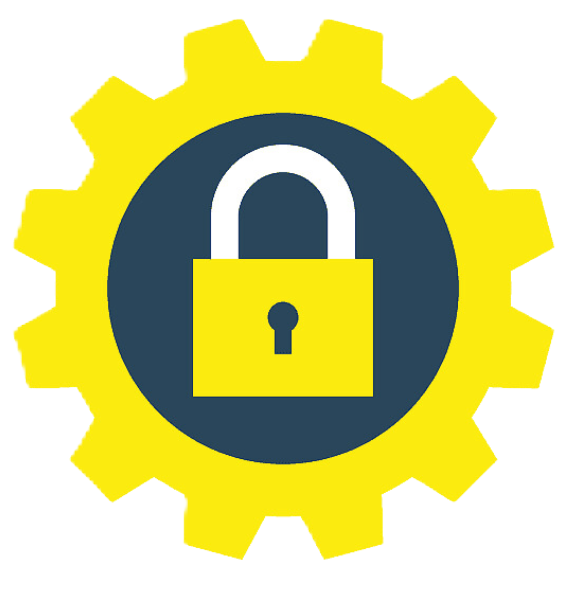
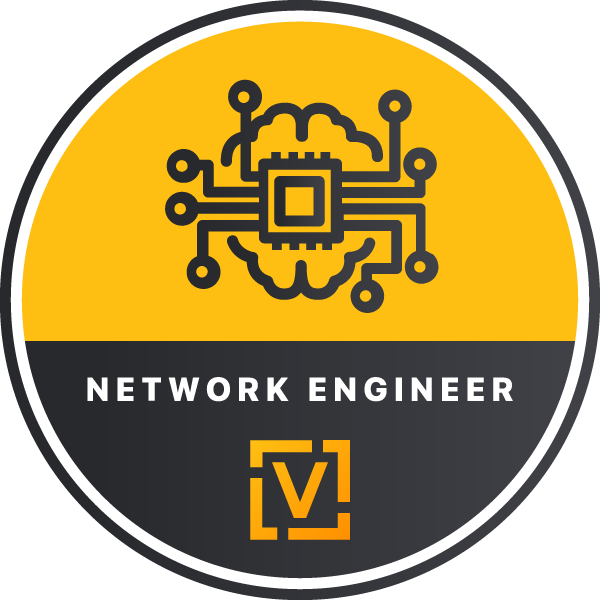
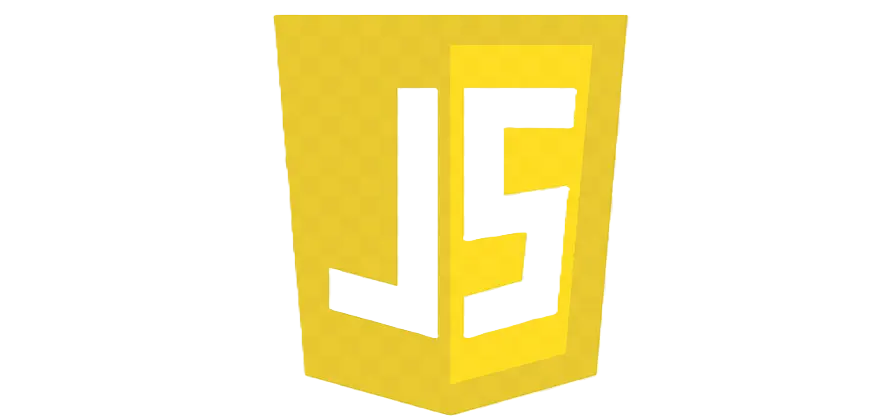
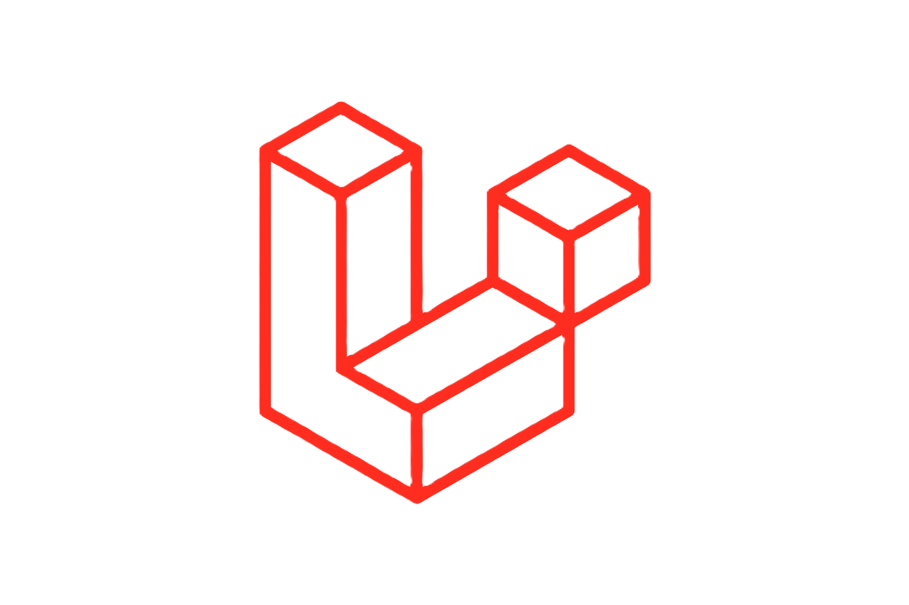
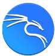

Saya adalah seorang pembelajar web development dan Desainer UI/UX yang berbasis di Tangerang Selatan,
Banten, dengan
pengalaman dalam pengembangan web dan media cetak. Saya menikmati mengubah masalah kompleks menjadi desain
yang sederhana, indah, dan intuitif.
Tugas saya adalah membangun situs web Anda agar fungsional dan ramah pengguna sekaligus menarik. Selain itu,
saya memberikan sentuhan pribadi pada produk Anda dan memastikan bahwa tampilan situs Anda menarik dan mudah
digunakan. Tujuan saya adalah menyampaikan pesan dan identitas Anda dengan cara yang paling kreatif. Saya
telah menciptakan desain web untuk berbagai perusahaan merek terkenal.
Skill yang Dikuasai
Web design
Desain terkini dan berkualitas tinggi yang dibuat dengan standar profesional.
Web development
Pengembangan situs web berkualitas tinggi dengan tingkat keahlian profesional.
Jaringan Komputer
Desain jaringan komputer terkini dan berkualitas tinggi yang dikembangkan dengan standar profesional.

Penetration Testing
Penerapan, Pengetesan dan Pengelolaan sistem keamanan siber dengan tingkat keahlian yang tinggi.
Seputar IT
Jaringan Komputer
Jaringan komputer adalah sistem yang menghubungkan komputer dan perangkat lain untuk berbagi data
dan sumber daya. Ini memungkinkan komunikasi antar perangkat melalui kabel atau sinyal nirkabel,
serta akses ke internet dan layanan lainnya. Jaringan dapat berupa lokal (LAN), luas (WAN), atau
virtual (VPN), tergantung pada skala dan kebutuhan pengguna.
Web Development
Pengembangan web adalah proses membuat dan memelihara situs web dan aplikasi web. Ini melibatkan
desain antarmuka, penulisan kode menggunakan bahasa pemrograman seperti HTML, CSS, dan JavaScript,
serta integrasi fitur dan fungsionalitas. Tujuannya adalah menciptakan situs web yang fungsional,
menarik, dan mudah digunakan, serta memastikan performa dan keamanan yang optimal.

Network Engineer
Network Engineer adalah profesional yang merancang, menginstal, dan memelihara jaringan komputer.
Mereka bertanggung jawab untuk memastikan jaringan berjalan dengan baik, aman, dan efisien, termasuk
konfigurasi perangkat keras seperti router dan switch, serta pemecahan masalah jaringan. Network
engineer juga mengelola koneksi jaringan, mengoptimalkan kinerja, dan memastikan integritas serta
keamanan data yang ditransmisikan.
Penetration Testing
Penetration Testing adalah proses menguji keamanan sistem, jaringan, atau aplikasi dengan
mensimulasikan serangan siber. Tujuannya adalah untuk mengidentifikasi dan mengevaluasi kerentanan
sebelum dapat dieksploitasi oleh pihak yang tidak berwenang. Penetration tester, atau ethical
hacker, menggunakan berbagai alat dan teknik untuk menemukan celah keamanan dan memberikan
rekomendasi perbaikan guna meningkatkan perlindungan terhadap ancaman siber.
Daniel lewis
Tools



Curiculum Vitae
Pendidikan
SMKS Fadilah
2019 — 2022
Saya menempuh pendidikan di SMK dengan jurusan Teknik Komputer Jaringan dari tahun 2019 hingga 2022.
Selama masa studi, saya mempelajari dasar-dasar jaringan komputer, konfigurasi perangkat keras, serta
pemecahan masalah jaringan, yang memberikan saya keterampilan teknis yang solid dalam bidang jaringan
komputer.
Bootcamp Etchnical Hacking For Beginer
HackerRoom.id (2024)
Pada tahun 2024, saya mengikuti bootcamp "Ethnical Hacking For Beginner" yang diadakan oleh
Hackeroom.id. Program ini memperkenalkan saya pada dasar-dasar hacking etis dan teknik-teknik keamanan
siber, memperluas pengetahuan saya dalam mengidentifikasi dan mengatasi kerentanan sistem secara
efektif.
Pengalaman
Customer Service & Operator Provider
2023-2024
Customer Service Operator Provider** adalah peran yang menggabungkan layanan pelanggan dengan dukungan
teknis untuk layanan telekomunikasi atau penyedia jaringan. Tugasnya meliputi menjawab pertanyaan
pelanggan, menangani keluhan, serta memberikan bantuan teknis terkait produk dan layanan. Mereka
memastikan pengalaman pelanggan yang baik dengan menyelesaikan masalah teknis dan memberikan informasi
yang diperlukan untuk layanan yang optimal.
Admin Social Media Specialist
2023
Sebagai Admin Social Media Specialist, tugas saya meliputi:
(1) Mengelola Konten: Membuat, menjadwalkan, dan memposting konten di berbagai platform media sosial
untuk
menarik dan mempertahankan audiens.
(2) Interaksi dengan Pengguna: Menanggapi komentar, pesan, dan pertanyaan dari pengguna untuk membangun
hubungan positif dan meningkatkan keterlibatan.
(3) Analisis Kinerja: Memantau dan menganalisis metrik media sosial untuk mengevaluasi efektivitas
kampanye
dan strategi konten.
Prakerin PT Telkom Indonesia
SMK Kelas 11
Selama prakerin di PT Telkom Indonesia sebagai Network Engineer, saya terlibat dalam:
1. Konfigurasi dan Pemeliharaan Jaringan: Membantu dalam pengaturan dan perawatan perangkat jaringan
seperti router dan switch untuk memastikan kinerja yang optimal.
2. Monitoring dan Evaluasi: Memantau kinerja jaringan dan menganalisis data untuk mendeteksi potensi
masalah dan meningkatkan efisiensi.
3. Dukungan Teknis: Memberikan dukungan teknis kepada tim dan pelanggan untuk memastikan layanan
jaringan berjalan lancar.